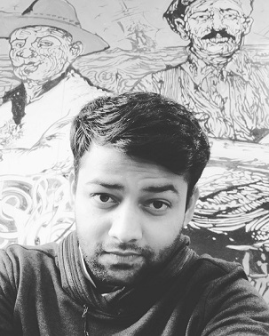

About Me |
|
|  |
Hi, I am Akash!!I was born on 3rd April, 1997 in Chandigarh, a beautiful city full of culture and lively people. I graduated from BITS, Pilani with a Bachelors in Marine Engineering and went on to join Maersk Line as a Sailing Junior Engineer where I sailed on two of their Container Carriers. My life as a sailor took me around the globe to many countries where I got the chance to take a peek into the lives and culture of people from different places. The time I spent exploring the world through my work gave me opportunities that I wouldn't have gotten if I had chosen any other profession and for that I am grateful to have had a chance to do so many things that I wanted to do ever since I was little. But my choices had led me to a place in life where I could feel my world narrowing for some reason, I started to see that the profession I had chosen was also limiting the choices that I could make and the things I could do with my life. The picture I was looking in my mind was not one which I ever wanted to come true, So, after a long introspection I decided to make a change in my life and joined AttainU to educate myself on another profession that I felt was more inline with the version of life that I had in mind. So, now I am here to reinvent myself to give myself a better chance at the life that I wanted to have. I love doing the work that we do here at AttainU and I hope that this will turn out to be the best decision that I made in my life. |